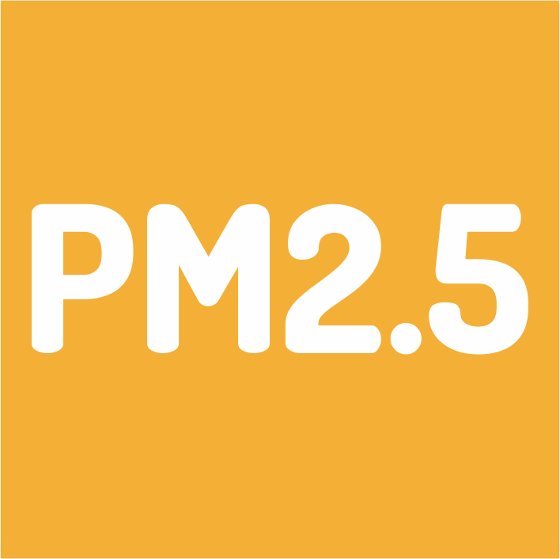

Bosnia and Herzegovina air quality
The project aims to study air quality in Bosnia and Herzegovina through GIS-based analyses using open-source data. In particular, the study highlights the relationship between major air pollutants (NO₂ and PM₂.₅) and environmental variables (land cover), in order to understand how these factors impact the population.
Population
Surface (km²)
Density (ab./km²)

Why mapping air pollution in Bosnia and Herzegovina
Mapping air pollution in Bosnia and Herzegovina is essential to understand how environmental and urban factors influence the distribution and concentration of harmful pollutants. Air pollution—caused by sources such as vehicle traffic, industrial emissions, and residential heating—poses serious risks to both human health and ecosystems. According to the WHO, the vast majority of the global population lives in areas where air quality exceeds safe limits, and Bosnia and Herzegovina is no exception. In urban areas especially, concentrations of pollutants like nitrogen dioxide (NO₂) and fine particulate matter (PM₂.₅) tend to be higher, affecting a large portion of the population.
-
Nitrogen dioxide
NO₂ is a harmful gas produced mainly by traffic emissions, especially from diesel vehicles, as well as by industrial processes and power generation. It contributes to the formation of ground-level ozone and fine particulate matter, worsening overall air quality. Prolonged exposure to NO₂ irritates the respiratory system and increases the risk of asthma, bronchitis, and other chronic lung diseases. According to the WHO air quality guidelines, the recommended annual average concentration of NO₂ should not exceed 10 µg/m³.
-

Fine particulate matter
PM₂.₅ refers to airborne particles with a diameter of less than 2.5 micrometers. These particles are emitted from vehicle exhausts, residential heating (especially wood and coal burning), industrial activities, and atmospheric chemical reactions. Due to their small size, PM₂.₅ particles can penetrate deep into the lungs and even enter the bloodstream, causing cardiovascular and respiratory diseases, and increasing the risk of stroke, cancer, and premature death. The WHO recommends that the annual average concentration of PM₂.₅ should not exceed 5 µg/m³.

Mortality due to long-term exposure to NO₂ in 2022
Source: EEA

Mortality due to long-term exposure to PM2.5 in 2022
Source: EEA
Understanding the Spatial Patterns of Pollution
Air pollution distribution is not uniform. Our maps reveal how concentrations vary between urban centers and rural regions, with major hotspots around Sarajevo, Banja Luka, and Tuzla.
The Role of Seasonality and Heating Practices
Winter months show significantly higher pollutant levels, mainly due to widespread use of solid fuels for residential heating. December is the most critical period across the country.
Population Exposure and Vulnerability
Not all communities are equally affected by air pollution. Densely populated areas face higher health risks. By combining pollution data with population density, our analysis highlights where public health interventions are most urgently needed.
Urbanization Map
The map below highlights the main urban areas of the country, where the intersection of population density and pollution levels is most critical.
Understanding these spatial patterns is a key step toward mitigating health risks and promoting sustainable development in the region.